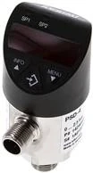
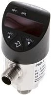
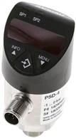
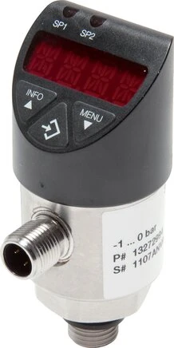

Electronic pressure switch
WIKA DRSEW-1-6
DRSEWcông tắc áp suất điện tử WIKA
Giám sát áp suất, cảnh báo mức áp trong máy
Chi tiết →Hỗ trợ tra mã và báo giá pressure switch WIKA theo dải áp, điểm cài đặt, tín hiệu switching, IO-Link, kết nối G1/4, đầu điện và ứng dụng bảo vệ áp suất trong nhà máy.
Khách hàng thường tìm theo cụm WIKA DRSEW, công tắc áp suất WIKA, pressure switch WIKA IO-Link, WIKA G1/4, công tắc áp suất điện tử WIKA 0-10 bar, 0-100 bar, 0-600 bar.
Một số mã thông dụng nhất — bấm Chi tiết để xem đầy đủ thông số, ảnh và gửi báo giá. Xem toàn bộ mã theo nhóm ở phần bên dưới.

Giám sát áp suất, cảnh báo mức áp trong máy
Chi tiết →
Bảo vệ bơm, máy nén, cụm thủy lực, đường ống áp
Chi tiết →
Tự động hóa, theo dõi áp suất và cấu hình qua hệ thống
Chi tiết →
Ứng dụng cần giám sát áp suất và tín hiệu số
Chi tiết →
Máy công nghiệp, cụm thủy lực, hệ thống áp lực cao
Chi tiết →Bấm vào từng mã để xem thông số, ảnh và gửi RFQ. Các mã được gom theo nhóm sản phẩm để dễ đối chiếu dải đo và kích thước.
68 mã · nhóm DRSEW-1
16 mã · nhóm FULLSTWC1SP12-100
8 mã · nhóm TSEW50
4 mã · nhóm SWEW14
Cảm biến áp suất thường xuất tín hiệu đo liên tục như 4-20mA hoặc 0-10V. Công tắc áp suất dùng để đóng/ngắt, cảnh báo hoặc điều khiển theo điểm cài đặt áp suất.
Cần gửi mã đầy đủ, dải đo, điểm cài đặt, kiểu ngõ ra, ren, đầu nối điện, nguồn cấp, số lượng và ứng dụng. Nếu chưa rõ mã, ảnh nameplate giúp đối chiếu nhanh hơn.
Có. IO-Link là từ khóa kỹ thuật có ý định mua tốt trong tự động hóa, nên xuất hiện ở title phụ, bảng mã, FAQ và alt ảnh của biến thể DRSEW có IO-Link.